Provavelmente ambientado no ano de 1993, o personagem principal, cujo nome mais tarde se revela ser Mike Afton "filho do vilão",
começou num emprego de guarda de segurança noturno no restaurante da Pizzaria Freddy Fazbear.
Uma mensagem de voz deixada gravada pelo antecessor de Mike explica que os personagens animatrônicos utilizados no restaurante
- Freddy Fazbear, Bonnie the Bunny, Chica the Chicken e Foxy the Pirate Fox - são deixados funcionando e perambulando livremente
pelo estabelecimento durante a noite, porque caso ficassem desligados por muito tempo, seus motores travariam.
Ele acrescenta que não se permitia mais que os animatrônicos perambulassem livremente durante o dia desde um incidente conhecido como
"a Mordida de 87", em que aparentemente no ano de 1987 um cliente ou funcionário havia sido mordido por um animatrônico e perdeu o lobo
frontal, além de ter ficado em coma. O funcionário avisa a Mike que se um dos robôs encontrar uma pessoa à noite, irão achar que se trata
de um endoesqueleto de animatrônico ainda sem revestimento, e o introduzirão a força em um revestimento mecânico que acaba matando-o no
processo. Algum tempo depois, graças a cartazes vistos no canto do corredor principal, livros e minigames dos jogos seguintes, é descoberto
que os animatrônicos movem-se sozinhos porque há almas de crianças dentro dos bonecos. segundo os cartazes e nos outros jogos,
cinco crianças identificadas como Gabriel, Susie, Jeremy, Fritz e Cassidy foram mortas por um homem chamado William Afton que usava uma
fantasia de coelho animatrônico, e dizem que os corpos das crianças foram colocados dentro das mascotes.
Inexplicavelmente, as almas das vítimas tomaram controle dos animatrônicos, e eles atacam o jogador pois acham que ele é o assassino.
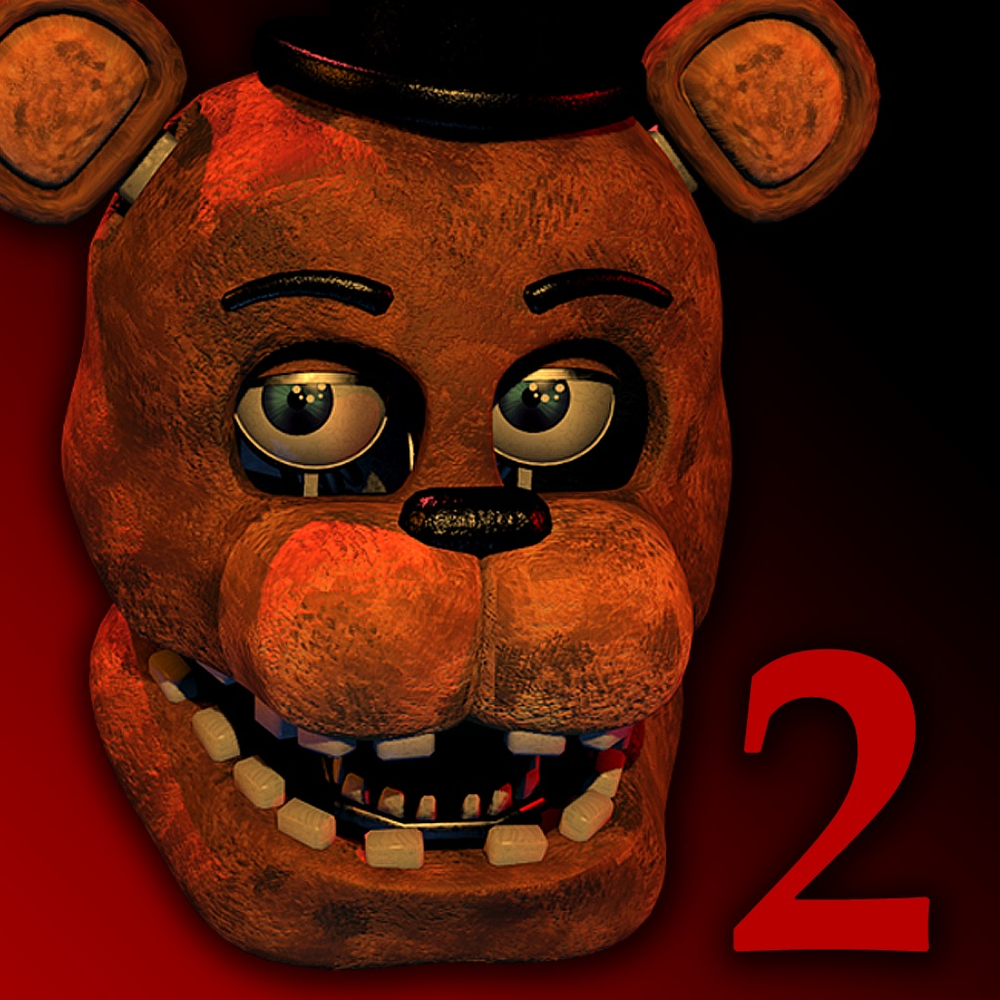
Five Nights at Freddy's 2:
A história se passa em 1987.
O personagem do jogador é Jeremy Fitzgerald, começou a trabalhar como guarda de segurança noturno na melhorada Pizzaria Freddy Fazbear.
A mesma pessoa do jogo anterior (só que mais nova) um cara telefona para Jeremy no início de cada noite para explicar a jogabilidade e
história. Ele explica que os novos (na época) animatrônicos, que têm um software especial de reconhecimento facial para proteger as
crianças de danos potenciais, não foram programados com um modo noturno apropriado, então quando eles não ouvem nenhum som, sua
programação lhes diz que eles estão no lugar errado e procuram a fonte sonora mais próxima em busca de pessoas para entreter,
lugar que calha de ser o escritório.
Assim como no jogo anterior, a programação dos animatrônicos lhes diz que não deveria haver ninguém no restaurante fora do horário
do expediente, por isso, ao se depararem com Jeremy, eles acreditarão que ele é um endoesqueleto de animatrônico sem um revestimento
e o introduzirão em um revestimento sobressalente de Freddy Fazbear, matando-o no processo. O homem ao telefone explica que o
restaurante tem uma fonte de energia ilimitada à noite (ao contrário do jogo anterior), mas não há portas bloqueando o acesso ao
escritório, o que obriga o jogador a usar uma máscara sobressalente de Freddy Fazbear para fazer a maioria dos animatrônicos não
confundi-lo com um endosqueleto. O jogador será informado de que deve continuamente dar corda em uma caixa de música para evitar
que a música pare e a marionete saia de sua caixa e ataque o jogador.
O jogador também é informado de que a luz de sua lanterna consegue fazer com que o sistema de certos animatrônicos se reinicie,
fazendo-os sair do escritório. À medida que o jogo avança e mais personagens inimigos aparecem, o homem ao telefone informa a Jeremy
sobre a presença dos personagens, seus padrões de movimento, e algumas informações de plano de fundo sobre a sua presença na sequela.
Por exemplo, o homem ao telefone explica que os animatrônicos antigos estão no novo restaurante, e foram adaptados com a nova tecnologia,
mas como eles não funcionaram corretamente, eles são mantidos como fonte de peças de reposição
À medida que o jogo avança, é sugerido que alguma coisa está acontecendo durante o dia, com o homem ao telefone mencionando que
há boatos correndo e, mais tarde, que uma investigação policial está em curso. Não se especifica o que exatamente está acontecendo,
mas o homem informa que alguém aparentemente entrou no restaurante e "usou um dos revestimentos de animatrônicos" com intenções
desconhecidas. Na quinta noite do jogo, Jeremy é informado pelo homem ao telefone de que o restaurante foi colocado em confinamento
devido a um evento que ele não vai descrever, mas que é necessário para garantir que nenhum funcionário, atual ou antigo,
possa entrar ou sair. O homem também menciona que há uma vaga na segurança do restaurante no período diurno e Jeremy pode ser
promovido a ela, e que o proprietário do restaurante antigo chamado "Fredbear's Family Diner" será contactado para dar mais
informações sobre os animatrônicos.
Na sexta noite, o homem ao telefone informa a Jeremy que o restaurante foi fechado por razões não reveladas,
mas ele menciona que alguém usou um "revestimento sobressalente amarelo" e que agora nenhum dos robôs funciona corretamente.
Ele também diz a Jeremy que ele vai assumir como guarda de segurança noturno quando o restaurante reabrir.
Se Jeremy conseguir sobreviver à sexta noite, ele vai ser promovido para o turno diurno para cobrir uma festa de aniversário no dia
seguinte para certificar-se de que os animatrônicos não causem nenhum problema.
Um jornal que é mostrado na tela de vitória da sexta noite diz que o restaurante irá fechar e os novos animatrônicos serão desmontados,
mas os antigos serão guardados para quando o restaurante reabrir, insinuando os eventos do primeiro jogo
No nível Noite Customizada, Jeremy é substituído por um novo personagem jogador chamado Fritz Smith devido à promoção de Jeremy.
Se o jogador conseguir vencer a Noite Customizada, ele descobre que Fritz foi demitido por "mexer nos animatrônicos"
(por ser capaz de mexer na IA) e por "mau cheiro", uma referência à mensagem do nível customizado do jogo anterior.
Alguns dizem que, Jeremy Fitzgerald é a vítima da mordida de 87, pois o Phone Guy diz " mantenha-se perto dos robôs para
evitar qualquer problema ou acidente", quando ele diz "mantenha-se perto dos robôs" seria a mesma coisa de
"deixe uma chance dos robôs te arrancarem o lóbulo frontal".
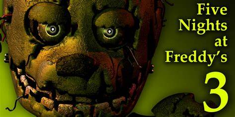
Five Nights at Freddy's 3:
Five Nights at Freddy 3 está definido trinta anos depois dos eventos do jogo original.
O jogador assume o papel de um funcionário recém-contratado pela Fazbear's Frights, uma atração de horror temática baseada nos mistérios
não resolvidos da Pizzaria Freddy Fazbear, construída usando apetrechos recuperado dos restaurantes originais.
Durante a semana antes da atração está prevista a abertura ao público, o jogador deve vigiar a instalação do Serviço de Segurança durante
o turno da noite (00:00-06:00 em tempo de jogo), usando uma rede de câmeras de vigilância colocadas nos quartos e saídas de ar.
Além disso, o jogador deve monitorar o status de sistemas operacionais - três câmeras, áudio e ventilação - e reiniciá-los quando
eles começarem a falhar. Problemas com a câmera causam feeds de vídeo, já mal iluminados e distorcidos, se tornando totalmente
obscurecido por estática. Se a ventilação falhar, o jogador começa a ter alucinações e ver fantasmas dos animatrônicos dos jogos
anteriores, que podem causar avarias adicionais. Depois da primeira noite, a equipe da Fazbear's Frights descobriram, um animatrônico
deteriorado, um coelho amarelo, que eles se referem como Springtrap. E o Cara do Telefone sempre se refere a ele como Spring Bonnie.
O jogador deve impedi-lo de entrar no escritório e atacar; se isso acontecer, o jogo termina. O jogador pode selar as saídas de ar em
certos pontos para bloquear o seu progresso, mas não pode selar a entrada da ventilação que leva diretamente para o escritório.
O sistema de áudio pode ser usado para reproduzir efeitos sonoros que afasta Springtrap do escritório.
Com o progresso das noites, o jogador ouve uma série de fitas cassete de instruções, semelhantes às chamadas telefônicas dos dois
primeiros jogos, que instruem os funcionários como operar o terno Springtrap, que podem ser usados por ambos os seres humanos e
endosqueletos animatrônicos. No entanto, fitas posteriores desencorajam o uso do terno pelos funcionários devido a uma série de
acidentes fatais envolvendo a falha de mecanismo springlock do terno. Minigames de baixa resolução entre noites insinuam o passado
conturbado do restaurante, com minigames das quatro primeiras noites "que descreve os animatrônicos originais seguindo na sequência
uma sombra roxa escura antes de serem violentamente desmontados por William Afton, anteriormente visto nos minigames de
Five Nights at Freddy's 2 como o homem responsável pelos vários assassinatos que ocorreram ao longo da história ficcional da franquia.
Em um minigame na quinta noite, os fantasmas das cinco crianças que habitavam os animatrônicos aparecem, William, tenta proteger-se
escondendo-se no terno Springtrap. No entanto, o defeituoso mecanismo de springlock do terno falha, e é esmagado pelo traje e as
almas das crianças desaparecem, deixando seu assassino para sangrar até a morte.
Ao contrário das entradas anteriores, Five Nights at Freddy's 3 contém dois finais, dependendo se o jogador tenha encontrado e
completou todos os minigames escondidos dentro do jogo principal. Algumas delas estão disponíveis apenas nas noites específicas,
enquanto outros podem ser acessados durante qualquer noite. O "final ruim" é alcançado a partir de completar o jogo sem completar todos,
ou nenhum dos minigames escondidos, e mostra uma tela que descreve as cabeças dos cinco animatrônicos do primeiro jogo com os olhos
iluminados, indicando que as almas das crianças desaparecidas não foram libertadas. Completando todos os minigames escondidos antes de
completar o jogo ganha o "bom final", que é o mesmo ecrã, conforme descrito anteriormente, mas com a cabeça dos animatrônicos desligadas,
indicando que as almas das crianças desaparecidas foram libertadas, e elas podem finalmente descansar em paz.
Completando as cinco noites desbloqueia uma noite bônus, "Nightmare", o que aumenta a dificuldade do jogo, semelhante a "Noite 6"
nos títulos anteriores. Ao jogar o modo, uma gravação arquiva todos os locais da Pizzaria Freddy Fazbear: quartos seguros,
uma sala de emergência adicional não registrados nos animatrônicos sistemas de inteligência artificial ou de segurança,
serão permanentemente selado, instruindo os funcionários a não contar a ninguém de sua existência. Quando esta noite é concluída,
um recorte de jornal revela que Pavores Fazbear é destruída em um incêndio logo após os eventos do jogo,
e que qualquer peças recuperáveis a partir da atração vão ser leiloadas.
No entanto, iluminando a imagem revela Springtrap em segundo plano, o que sugere alguma forma ele sobreviveu,
deixando seu destino desconhecido.
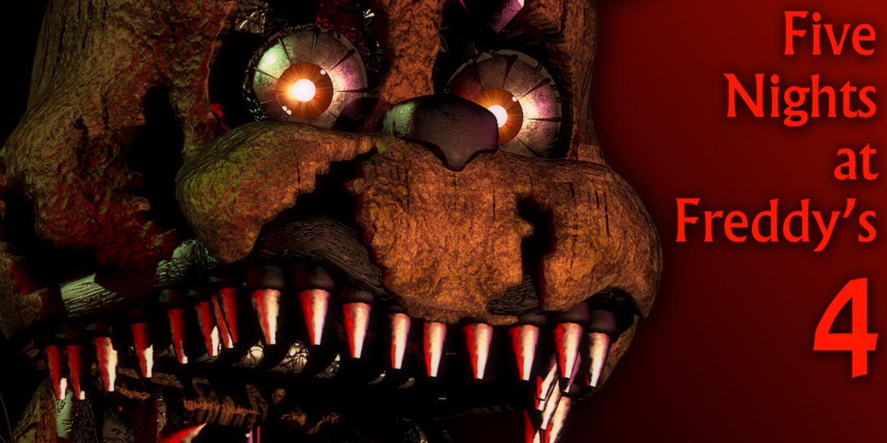
Five Nights at Freddy's 4:
Desde 27 de abril de 2015,
Scott Cawthon vinha liberando em seu site teasers para um novo jogo da série Five Nights at Freddy's. Five Nights at Freddy's 4.
Os teasers eram imagens com os personagens da série. Um trailer foi lançado em 13 de julho de 2015 e deu a entender que o
jogo se passava na casa do personagem principal. O subtítulo "The Final Chapter" foi descartado. O lançamento do jogo foi
marcado para o dia 08 de agosto de 2015, para coincidir com a data de lançamento do jogo original e comemorar o aniversário
da série. No entanto, o jogo foi lançado repentinamente em 23 de julho de 2015 na Steam.
No jogo é contada, por meio de mini-games destravados a cada noite completada, a história de um garoto.
Este que aparenta não gostar muito de animatrônicos, mas que simpatiza com os personagens seriado.
Seu irmão assusta-o com a máscara de Foxy. O garoto iria comemorar seu aniversário no restaurante Fredbear's Family Diner,
mesmo tendo medo dos robôs. No dia do aniversário, seu irmão mais velho chamou três amigos dele pra "ver os bonecos animatronicos"
e eles se fantasiaram de Freddy, Bonnie, Chica e Foxy. No dia da festa de aniversário, o amigos de seu irmão o pegaram e o
carregaram para perto do Fredbear, para amedrontar mais o garoto, seu irmão falou: Ele quer dar um "beijo" no Fredbear.
Ele quer ver mais de perto". Fredbear era apenas um boneco mecânico e sua função era abrir e fechar a boca enquanto tocava
músicas[1], seu irmão e seus amigos o colocam na boca de Fredbear. Fredbear fechou sua boca e esmaga a cabeça do garoto .
O irmão e seus amigos ficaram parados, aparentando estar arrasados e assustados, pelo que fizeram e viram.
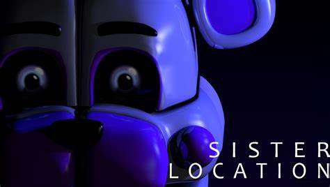
Five Nights at Freddy's: Sister Location
Lançado em 7 de outubro de 2016,
este jogo se passa em um lugar conhecido como Circus Baby Entertainment And Rentals,
onde acompanhamos o trabalho de um técnico noturno que noite após noite realiza manutenções em diversos animatrônicos do lugar.
Para continuarmos vivos, devemos aprender as mecânicas de cada animatrônico presente no jogo, seja andando sem fazer muito barulho
ou monitorando frequentemente a movimentação deles. Durante as noites nos temos algo diferente dos outros jogos,ao inves de sermos
guiados por homens em telefones ou fitas cassetes somos guiados por robos.
O primeiro funciona como um tipo de inteligencia artificial do local chamada HandUnit que nos orienta sobre o basico,mas ele só fala
oque ele quer que você saiba quem realmente te ajuda e a animatrônica principal do local chamada Circus Baby.
Ela te ensina como derrotar os Bidybads e a Ballora na segunda noite, ainda nessa noite HandUnit honestamente o ajuda a passar pelo
Funtime Freddy.
Depois na terceira noite, você consegue ouvir um áudio secreto da Circus Baby que conta como ela já capturou e matou uma menina que
mostra que ela foi feita para capturar crianças, depois mais uma vez honestamente HandUnit o ajuda a derrotar Funtime Foxy e Bonbon,
mas no final da noite você acaba morrendo para Funtime Foxy automaticamente, sem poder fazer nada para impedir, na quarta noite você
é instruído por Circus Baby como manusear um traje de springloock enquanto enfrenta as Minireenas assim na ultima noite você é levado
para a Sala de Desmonte e acaba levando um golpe de uma garra de metal chamada Scooper que arranca seus órgãos, e sua pele é usada para
Circus Baby junto com todos os outros animatronicos Funtime Freddy, Funtime Foxy e Ballora fugirem se passando por você.
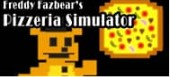
Freddy Fazbear's Pizzeria Simulator:
Cawthon lançou o F
reddy Fazbear's Pizzeria Simulator gratuitamente na Steam no dia 4 de dezembro de 2017 depois de provocar o jogo alguns dias antes.
O jogo parece jogar como um jogo de simulação de restaurante para planejar e executar a Pizzaria própria de Freddy Fazbear,
mas acaba envolvendo vários mini-jogos que estão na mesma veia de horror de sobrevivência que os outros jogos principais da série.
Os elementos da parte de simulação do restaurante afetam as partes do jogo semelhantes às séries principais
Ultimate Custom Night:
Ultimate Custom Night,
um jogo que conta com o modo "noite personalizada" visto em jogos anteriores, foi lançado em 27 de junho de 2018.
A noite personalizável permite que o jogador escolha entre mais de 50 animatronics de todos os outros seis principais jogos de
Five Nights at Freddy's , bem como do spin-off, FNaF World, e defina suas dificuldades (entre 0 e 20) para determinar o quão
agressivo eles são durante a noite. O jogador também pode selecionar o escritório em que deseja jogar e tem 16 modos de jogo
temáticos disponíveis para eles.[6][7] Originalmente, Ultimate Custom Night era para ser um DLC de
Freddy Fazbear's Pizzeria Simulator, mas acabou por se tornar num jogo independente.
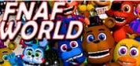
Five Nights at Freddy's World:
DEm setembro de 2015,
Scott Cawthon anunciou que estava desenvolvendo um novo jogo spin-off, intitulado Five Nights at Freddy's World.
O jogo não é de terror, e sim um RPG eletrônico, utilizando os vários personagens animatrônicos dos outros jogos.
Scott mostrou no anúncio que o jogo é um spin-off, considerando que o arco principal dos jogos anteriores foi completado com o quarto jogo.
A demo foi programada para ser lançada um momento antes do jogo completo, que foi programado para ser lançado em 2016.
Os personagens serão os antagonistas de cada jogo, e se chamarão com os seus nomes com a adição da palavra Adventure
(Ex.: Adventure Freddy).
Em FNaF World você pode poderá escolher dois times principais com quatro integrantes cada para usa-los em batalha.
Inicialmente seus times são Freddy, Bonnie, Chica e Foxy no time azul e Toy Freddy, Toy Chica, Toy Bonnie e Mangle no time rosa.
Cada integrante possui 3 ataques que tanto podem ser ofensivos (atacando os inimigos), restaurativos
(onde se pode restaurar sua vida no time) ou evolutivos (onde se pode aumentar ataque, velocidade e defesa do time enquanto batalha).
Se caso todos os personagens morrerem você perderá a partida e será redirecionado ao lugar onde tudo começou.
Em FNaF World, as orientações de FredBear, que te mostrará os locais dos misteriosos itens "glitchados",
que te darão teletransporte ao mundo glitchado ou através dele você terá acesso a lugares no mundo.
Você começará em Fazbear Hills, lugar que lembra muito uma vila em uma floresta, com algumas construções e uns vendedores.
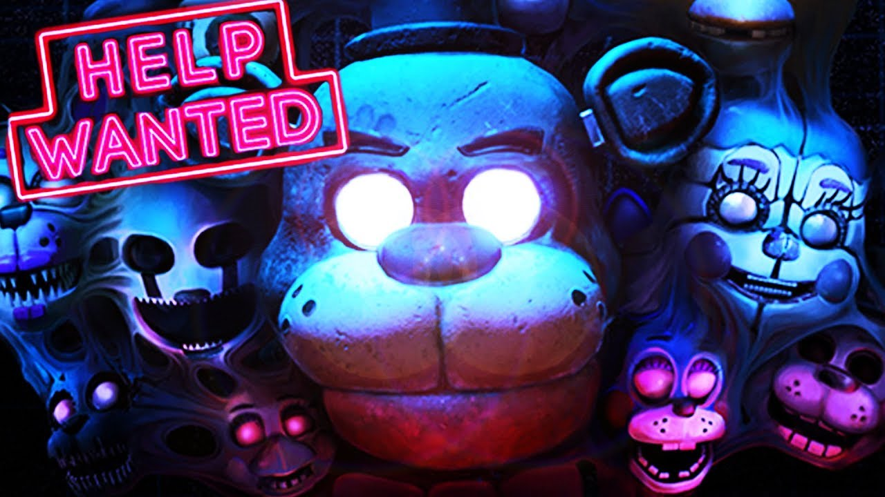
Five Nights at Freddy's: Help Wanted:
Desde 27 de abril de 2015,
Scott Cawthon vinha liberando em seu site teasers para um novo jogo da série Five Nights at Freddy's. Five Nights at Freddy's 4.
Os teasers eram imagens com os personagens da série. Um trailer foi lançado em 13 de julho de 2015 e deu a entender que o
jogo se passava na casa do personagem principal. O subtítulo "The Final Chapter" foi descartado. O lançamento do jogo foi
marcado para o dia 08 de agosto de 2015, para coincidir com a data de lançamento do jogo original e comemorar o aniversário
da série. No entanto, o jogo foi lançado repentinamente em 23 de julho de 2015 na Steam.
No jogo é contada, por meio de mini-games destravados a cada noite completada, a história de um garoto.
Este que aparenta não gostar muito de animatrônicos, mas que simpatiza com os personagens seriado.
Seu irmão assusta-o com a máscara de Foxy. O garoto iria comemorar seu aniversário no restaurante Fredbear's Family Diner,
mesmo tendo medo dos robôs. No dia do aniversário, seu irmão mais velho chamou três amigos dele pra "ver os bonecos animatronicos"
e eles se fantasiaram de Freddy, Bonnie, Chica e Foxy. No dia da festa de aniversário, o amigos de seu irmão o pegaram e o
carregaram para perto do Fredbear, para amedrontar mais o garoto, seu irmão falou: Ele quer dar um "beijo" no Fredbear.
Ele quer ver mais de perto". Fredbear era apenas um boneco mecânico e sua função era abrir e fechar a boca enquanto tocava
músicas, seu irmão e seus amigos o colocam na boca de Fredbear. Fredbear fechou sua boca e esmaga a cabeça do garoto .
O irmão e seus amigos ficaram parados, aparentando estar arrasados e assustados, pelo que fizeram e viram.
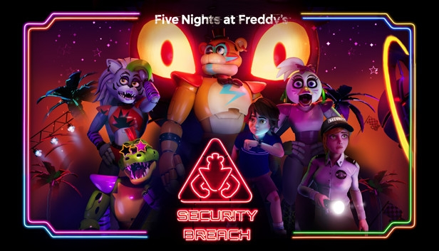
Five Nights at Freddy's: Security Breach:
Five Nights at Freddy's: Security Breach
foi lançado dia 16 de dezembro de 2021 para PlayStation 4, PlayStation 5 e Microsoft Windows.
O Jogo apresenta um lugar enorme chamado de Pizzaplex, onde os animatrônicos (Glamrock Freddy, Glamrock Chica, Montgomery Gator
e Roxanne Wolf) estão se apresentando num palco com um público animado. O jogo se passa em 2029.
O jogador tem o apoio de Glamrock Freddy para escapar do Pizzaplex. Mas todos os Animatronics tem o controle de VANNY.
Freddy não está sendo controlado por VANNY pois entrou em modo de segurança pelo motivo de Gregory estar em sua cavidade peitoral.
Causando que VANNY e Cliente 46 não o controle.
Há teorias que Freddy está possuído por uma alma que quer ajudar Gregory.
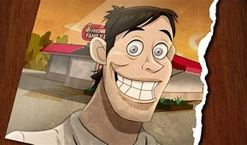
william Aftom:
o empresário e um dos socios da franquia, sendo tambem assasino das crianças e criador dos animatronics.
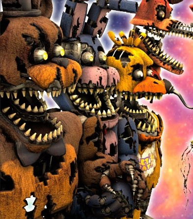
freddy, chica, bonny, foxy:
William Afton, dentro do que está implícito ser o terno da Bonnie da Primavera,
tinha se aproximado das cinco crianças - Susie, Fritz, Gabriel, Cassidy e Michael - e os atraiu para um quarto dos fundos.
Lá atrás, ele tinha matado todos os cinco, antes de enfiá-los nos ternos de mascote.
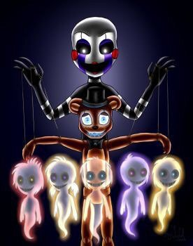
Puppet:
Charlotte era a filha do amigo de william afton no qual tinham aprceria na Pizzaria.
Charlotte em um tragico dia, como não tinha amigos, ficou sozinha em uma parte da pizzaria,
porém alguams crianças fizeram uma "bricadeira" com a mesma, a trancando fora do estabelecimento,
está chovendo forte e do nada um carro parou na frente da criança e a matou e foi embora. Puppet
foi criada para proteger Charlotte e tentou chegar na mesma porém por conta da chuva forte Puppet
acabpu estragando e não chegando a tempo e ficando quebrada ao lado do corpo da criança, com isso a alma de
Charlotte entrou em Puppet. Mais tarde ela deu vida a outros animatrocs do local com a alma das crianças assasinadas
por william afton.
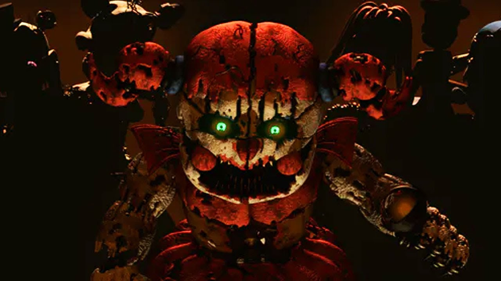
Circus Baby:
Elizabeth Afton, também conhecida como Circus Baby, é a antagonista secundária das Cinco Noites na franquia de Freddy.
Ela era filha de William Afton, e irmã mais nova de Michael Afton.
Ela tinha uma profunda confiança em seu pai e um amor por suas criações, admirando tudo o que ele faz.
No entanto, uma de suas máquinas, Circus Baby, a atacou e a matou, e sua alma possuía o animatrônico.
Ela mostra ter mudado drasticamente do evento, e agora é fria, sem coração e violenta.
Ela eventualmente encontra seu fim na FNAF 6. Depois de ser atraído para uma ventilação, Michael Afton tranca-a dentro e Henry Emily acende
um incinerador escondido. Ela tenta alcançar Michael, mas assa até a morte dentro da ventilação, e sua alma é libertada.
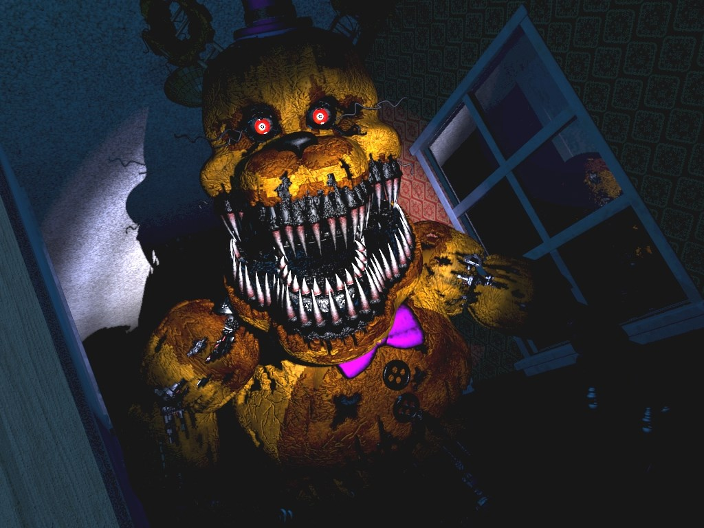
Golden Freddy:
Há uma teoria comum de que Golden Freddy é uma alucinação de Mike Schmidt.
Ela é reforçada já que Golden Freddy não aparece na tela de I.A. da noite customizada.
Além disso, Golden Freddy parece ter marcas de mão em seu rosto, semelhantes a de Freddy Fazbear,
e um maior apoio a essa ideia é de que é uma alucinação destorcida de Freddy.
Além disso, quando ele aparece no Escritório, não há um reflexo dele nos monitores, como normalmente há quando
tem um animatrônico normal na sala.
Além do mais, quando Golden Freddy mata o jogador, não aparece uma tela de Game Over, o jogo simplesmente trava.
.png)

.png)
.png)
.png)
.png)